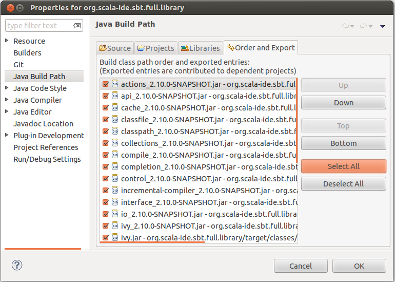

Setup¶
In this page you will learn everything you need to know to setup the Scala IDE project in Eclipse. After this reading you will be all set and ready to start hacking the Scala IDE sources!
Requirements¶
The Scala IDE project is on GitHub and in this writing we assume you have a GitHub account. If you don’t, go ahead and create one. You won’t be disappointed, GitHub is truly awesome!
Unsurprisingly, you will need Eclipse to contribute to the Scala IDE for Eclipse. If you haven’t download Eclipse yet, we recommend to use Eclipse Helios Classic. Also note that the plug-in sources are currently not compatible with Eclipse Indigo™, you need to use Eclipse Helios™.
Since the Scala IDE sources are mostly written in Scala (again, not really a surprising fact), you need to install the Scala IDE plug-in for Eclipse (since support for Scala 2.8 will be dropped after the final 2.0.0 release of the Scala IDE, we suggest you to use the Scala IDE plug-in for Scala 2.9 or Scala 2.10 - trunk). Developers are strongly encouraged to use a nightly build, as your feedback is vital to the project (catching errors early is the road to awesomeness).
You will also need a terminal to run some script. If you are on Windows, we suggest you to install Cygwin (how could you live without it on Windows anyway!?). It is not mandatory to use Cygwin, but in this documentation we assume you have a way to run bash scripts, or else you have the time and motivation to look inside the script and convert them in Windows batch files (if you do so, make sure to send a pull request our way, and we will make the Windows scripts available to all contributors).
Fork the project¶
The first thing you should do is forking the Scala IDE Git repository, that will greatly simplify the process of sending us patches (remember to also read about the Workflow before creating pull requests).
If you are new to GitHub, read here to learn how to fork a project.
After forking the project, simply open a terminal and clone your own fork to download the project’s sources. The command for cloning the fork should be very close to the following one (mind that you will have to replace <username> with your actual Git username).
$ git clone git@github.com:<username>/scala-ide.git
Make sure to add an Upstream pointing to the original Scala IDE git remote repository, so that you can keep fetching the latest changes made in the project, and easily integrate them back in your fork.
Now, fire up Eclipse and import the Scala IDE project. In a few moment you will be all set to start hacking on the Scala IDE!
Import the projects into Eclipse¶
The Scala IDE project already contains the metadata files needed by Eclipse to setup the project. To import the Scala IDE in your workspace simply click on File > Import. The Eclipse Import dialog will open. There, select General > Existing Projects into Workspace and click Next. A new dialog will open. Browse to the folder that points to your cloned Scala IDE project’s and select it.
A list of projects should then be loaded in the below white area. The only projects that you absolutely need to import in Eclipse are org.scala-ide.sbt.full.library, org.scala-ide.sdt.core and org.scala-ide.sdt.core.tests. Select only those and click Finish.
There is only one more thing you need to do to get ready to hack the Scala IDE project. You will notice that the org.scala-ide.sbt.full.library project has build path errors. This project is grouping together a bunch of SBT jars into one OSGI bundle. In order to retrieve them from different SBT/Ivy repositories, you need to run a script from the command line.
Open a terminal, go in your (local) Scala IDE project’s root folder, and then
$ cd org.scala-ide.build-toolchain
The script to run is different depending on the Scala version packaged with the Scala IDE plug-in you have installed.
If you are using the Scala IDE with Scala 2.9
$ ./build-toolchain-2.9.x.sh
or, if you are using Scala IDE with Scala 2.10 (trunk)
$ ./build-toolchain-trunk.sh
After the script completes, refresh the org.scala-ide.sbt.full.library project in Eclipse. Then, expand the org.scala-ide.sbt.full.library project and expand the lib folder. You should see a number of JARs with a Scala version appended.
Now, right click on the org.scala-ide.sbt.full.library project and then click “Properties”. A dialog will open. Click on “Java Build Path” and select the Libraries tab. You should see something on the lines of:

If you are seeing errors it means that the imported JARs do not match the ones existing in org.scala-ide.sbt.full.library/lib folder. To fix this, first remove all JARs, and then click the “Add JARs...” button and browse to org.scala-ide.sbt.full.library/lib. Select all JARs in the folder and click OK.
Now click the “Order and Export” tab and make sure to export all JARs click the “Select All” button.
Click OK. The build errors should go away. If they don’t, try to refresh all the projects (in Eclipse, select all the imported Scala IDE projects and press F5) and do a full clean, re-build (to do so, click on the “Project” menu item, and the “Clean...”).
If after rebuilding you still see errors, drop us a note in the Scala IDE Developer Mailing List.
Run the Scala IDE within Eclipse¶
So, you managed to have the Scala IDE sources compiling, now it’s time to learn how to run the Scala IDE within Eclipse.
Doing this is especially useful if you need to do some manual debugging of the plug-in. Since the Scala IDE uses weaving, you need to launch the IDE with weaving enabled, which is not configurable in the vanilla launcher.
That is why we suggest you to install the Equinox Weaving Launcher.
Install the Equinox Weaving Launcher¶
To install the Equinox Weaving Launcher, use the following Eclipse update site:
This adds two more launch configurations: Eclipse Application with Equinox Weaving, and JUnit plug-in test with Equinox Weaving.
Create a run configuration for launching Eclipse with Scala IDE¶
To create a run configuration, right click on the org.scala-ide.sdt.core project and select Run As > Equinox Weaving enabled Eclipse Application. That should fire up a second Eclipse instance. To quickly test that all is working fine, try to create a Scala project.
You are now ready to hack on the Scala IDE. Start by looking around, do some change and observe what happens when you launch the second Eclipse’s instance.
Read the rest of the developer documentation to get more insights about the overall architecture.
Additional information¶
org.scala-ide.sdt.aspects project¶
The Scala IDE uses AspectJ to weave into Eclipse and hook in to JDT internals. If you want to work on JDT integration within the Scala IDE, then it is a good idea to import org.scala-ide.sdt.aspects project in your Eclipse workspace and also install the AspectJ Eclipse plug-in.
Using JRebel¶
If you want to use JRebel, there are two things you need to know:
- You can simply add -noverify -javaagent:path/to/javarebel.jar to the VM arguments in the run configuration. For Windows, this is -noverify "-javaagent:C:\Program Files (x86)\ZeroTurnaround\JRebel\jrebel.jar".
- JRebel is free for Scala users, see Free JavaRebel for Scala users, ZeroTurnaround announces.